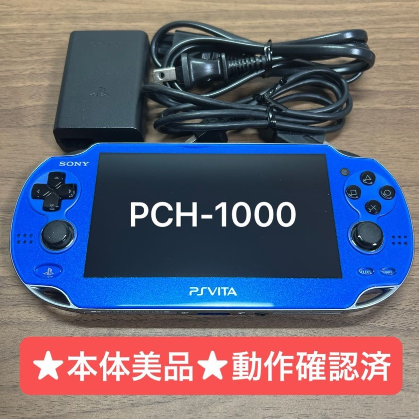

The original 'Fat' PS Vita (PCH-1000) features a rich, deep-black Samsung OLED display that delivers unmatched contrast ratios compared to later LCD revisions. Japan received mesmerizing limited colors like 'Sapphire Blue' and 'Cosmic Red' that were never widely released in the West.
OLED BURN-IN & PROPRIETARY PORT INSPECTION: 1) OLED Mura & Burn-in: Test with a solid grey or pure black background in the dark; look for vertical blotches or status bar burn-in. 2) Proprietary multi-use charging port: Inspect internal copper pins for bent or recessed contacts. 3) Hall-effect analog sticks: Verify zero stick drift in diagnostics.
💡 Insider Tip: Pair with an 'SD2Vita' micro-SD adapter and Henkaku custom firmware to bypass Sony's infamously expensive proprietary memory cards and store your entire digital library.
| Risk Level | Japanese Term (Kanji) | Real-World Meaning for Overseas Buyers |
|---|---|---|
| 🟢 Safe | 動作確認済Tested & Working | Safe to buy. Seller confirmed normal boot and operation. |
| 🟢 Safe | 箱説なしLoose / No Box or Manual | Working authentic item missing collector packaging. Best value for players. |
| 🔴 Fatal Trap | 動作未確認Untested | TRAP ON FLEA MARKETS. On Mercari JP, private sellers often use "Untested" to hide known dead units while avoiding returns. |
| 🔴 Fatal Trap | 現状品 / 部品取りAs-Is / For Parts | Confirmed broken unit sold strictly for spare parts. |
| Risk Level | Handhelds Listing Term | Hardware Reality & Buyer Verdict |
|---|---|---|
| 🟢 Safe | 画面ヤケ / 黄ばみScreen Yellowing | Mild age-related color shift on DS/GBA screens. 100% playable and authentic. |
| 🟡 Modder Only | 外装傷み / 塗装ハゲShell Wear / Paint Peeling | Great budget donor for IPS screen or reshell modding (authentic OEM motherboard inside). |
| 🔴 Fatal Trap | ビネガーシンドロームVinegar Syndrome | Degraded polarizer film causing dark blotches and sour odor. Requires screen replacement. |
| 🔴 Fatal Trap | ヒンジ割れ / 充電ランプ一瞬点灯Cracked Hinge / Flash Charge Light | Broken shell hinge or blown motherboard fuse (F1/F2). |
| 🔴 Fatal Trap | 液漏れ / 水没反応Battery Corrosion / Water Damage | Alkaline battery acid or liquid has corroded the PCB traces. Avoid. |
How to avoid hidden shipping bloat and foreign exchange fees when importing from Japan:
Why: Every item is tested and authenticated by store staff before shipping. Look for frequent "Free Shipping / 0 Yen Commission" campaigns on Buyee.
Why: When combining multiple consoles or boxed games via proxy, standard consolidation often leaves inner seller boxes intact, causing DHL/FedEx volumetric weight (容積重量) to explode to $60–$100+. Always request downsizing or consider proxies known for compact repacking when building large hauls.
👉 Compare Multi-Store Hauls & Compact Consolidation via FROM JAPAN (Official Partner) → | ZenMarket
Why: Proxy platforms often embed a 3%–6% exchange rate markup when charging in USD/EUR. Whenever possible, set your payment method (PayPal or zero-FX credit card) to bill directly in Japanese Yen (JPY) to save on every order.
Pre-configured search links for "PS Vita 1000 有機EL サファイアブルー コズミックレッド 動作確認済" across Japan's top 3 marketplaces:
Protect your authentic import or upgrade your setup with these proven tools:
We built the first 150 authenticity guides—now let's expand this database together! Tell us which Japanese console, cartridge, or controller you want us to add next.
➕ Request Guide #151 →Retro games are more than just plastic and circuits—they are cherished memories. Unfortunately, there are sellers out there today who try to take advantage of international fans by selling fake cartridges and doctored consoles. Nothing ruins the joy of retro gaming faster than realizing you were sold a counterfeit.
As a Japanese gamer, I want everyone around the world to experience our gaming heritage safely and authentically. By using the verification checklists and curated Japanese search links on this site, you can drastically reduce the risk of encountering fakes. My biggest wish is that visiting this site gives you total peace of mind, allowing you to focus on what truly matters: the joy of playing real Japanese retro games.